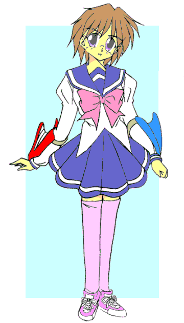
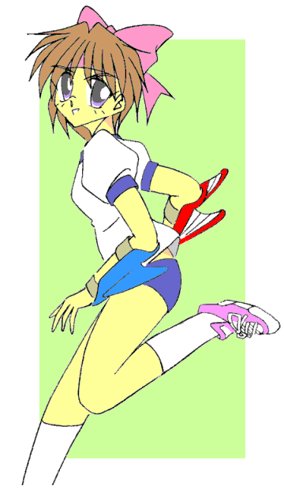
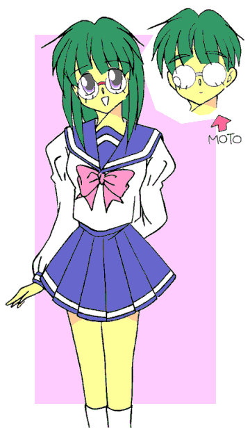
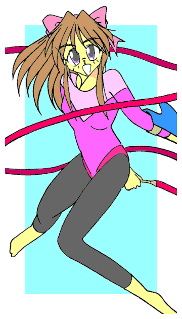

超古代の日本。そこには戦闘に秀でた女ばかりの部族があった。
その名は亜魔奴禰衆――アマッドネス。
彼女たちは自らの戦闘能力を高めるために奇怪な儀式を用いて動物や植物、蟲などの能力をその身に取り込み、異形と化していった。
そして闘争本能の赴くまま他の部族に襲いかかり、略奪・虐殺の限りを尽くし、村や集落をいくつも壊滅させていった。
アマッドネスたちの次のターゲットとなったのは、神殿をいただく神聖都市。
強固な城壁も異形と化した彼女たちの前には全く役に立たず、兵士たちもその魔力の前に次々と倒れていった……
邪悪なる魔力には、聖なる力。三人の戦乙女が決死隊となった。
「はぁぁぁっ！！」
短い髪の、まだあどけない容貌の少女が、気合のこもった拳の一撃を繰り出した。
動きやすさを優先した衣服――今風に言うなら、ノースリーブでミニスカートのワンピースといったところか――を身につけ、その右手は真紅の不死鳥を象った手甲、左腕は蒼いいるかを象った手甲で覆われている。
「ぐぎゃあああああああっ！！」
彼女の右手が蜘蛛を思わせる異形の胴体にめり込む。そのアマッドネスは断末魔の雄叫びを上げ、炎に包まれながら地に倒れ伏した。
「ふう……次から次へときりがない」
「大丈夫ですか？ セーラ様」
少女――セーラに付き従う黒猫が、人の言葉で声をかけてきた。
「平気。まだまだいけるよ、キャロル」
彼女は得意げに返事をするが、それは精一杯の強がり。
疲労に緊張が一瞬途切れ、頭上からの敵の奇襲に反応が遅れてしまう。
「セーラさん危ないっ！！」
叫び声と同時に風斬り音――飛来した矢が、セーラを襲おうとしたコウモリのような異形を撃ち抜いた。
長い髪を首の後ろで束ねた少女が、次の矢をつがえながら駆け寄ってくる。その服装はセーラのものと比べてかなり布地が多い。ただ、激戦のためかあちこちが綻びていた。もっとも彼女は弓の遣い手らしく、直接の攻撃はそれほど受けていないようなのだが。
「大丈夫ですか？ セーラさん」
「はは……ありがとジャンス、助かったよ」
「主人の身を案じるなら、敵の接近も教えなきゃなぁ……使い魔失格だぜぇ、キャロル」
ジャンスと呼ばれた少女の肩に舞い降りたカラスが、これまた人の言葉で黒猫に毒づいた。
「う……」
「言いすぎよ、ウォーレン」
主人の弓使いに窘められ、カラスの使い魔は羽根の付け根をすくめた。
セーラとジャンスは互いに頷き合うと、もうひとりの戦乙女の元へと向かった。
鎧に身を固めた少女――三人目の戦乙女が、ピラニアのような異形を袈裟斬りにする。
彼女は剣の戦乙女。その鎧には返り血がたっぷりとついており、それが激戦を物語っていた。
拳の戦乙女セーラと弓の戦乙女ジャンスが可愛い顔立ちなのに対して、彼女は今で言うところの「お嬢さま風美人」という感じである。優雅さを感じさせる金色の長い髪――いわゆる縦ロールが、その雰囲気を強めていた。
荒い呼吸を整えると、彼女は近づいてきた二人に注意を促した。
「二人とも気を抜くな。クイーンは近いぞ」
「……ええ」「わかってるって、ブレイザ」
三人の戦乙女は、１０８の魔物を打ち倒しながら敵の総大将――クイーンを目指した。
そして……最後の戦いが始まった。
ジャンスの放った矢が、最後の一人――クイーンの眉間に突き刺さった。
「うおおおっ！！」
血まみれのブレイザがその横を駆け抜け、すれ違いざまに一刀を振るう。
「はぁぁぁっ！！」
とどめとばかりに、セーラの正拳が真っ正面から炸裂する。
だが、クイーンはまだ倒れない。すでに彼女は、戦闘形態への変身もできなくなっているはずなのに。
「ふふふ……その程度か、戦乙女たちよ」
「何っ！？」
「そんなバカなっ！？」
なんと、クイーンの受けた傷が次々に塞がって治癒していくではないか。
そして、まるで彼女の回復にシンクロしているのかのように、倒されたはずの異形たち――アマッドネスたちまでが動屍体の如くのろのろと立ち上がりだした。
「なんて奴だ。このままでは、こちらの体力が先に尽きてしまう」
「あの紋様――どうやらクイーンは魔力で不死身になっているようです」
「そして女王が蘇えるとコイツらまで生き返るのか……ならば逆に言えば、女王を倒せば全てが終わる」
三人の戦乙女は、決意を固めた表情で互いの顔を見合わせた。
「ブレイザ様、……まさかっ！？」
彼女の使い魔である黒犬が、狼狽したような口調で叫んだ。
「どのみちこのままでは、こいつに皆滅ぼされるだけよ、ドーベル」
「仕方ありませんね……すでにこの命、神に返すつもりでしたし」
「奴を倒してみんなを守るには、あれしかない」
口元にニヤリと笑みを浮かべながら、緩慢な動きで立ち上がるクイーン。
だが三人はあえて攻撃を加えなかった。一度は灰にまでしたのに、あっさり蘇えってきたのだ。むしろ中途半端なダメージの方が、回復（復活）に時間がかかるようだ。
彼女たちはクイーンを取り囲むように正三角形の陣を張ると、聖呪を唱えだした。
そしてその詠唱が終わると、一斉に宙へと舞い上がった。
「……はっ！」
「……やっ！」
「はぁぁぁ……っ！！」
裂帛の気合とともに、三人は全身全霊をこめたキックを三方向から同時に放った。
それぞれの足が、眩い光を放つ。そしてその聖なる光は、クイーンの身体へと一気に注ぎ込まれた。
「ぐぎゃあああっ！！ まっ、魔力が……魔力がああっ……お、おのれっ、我が不死の魔力を断ち切ったかっ！！」
腕の一振りで跳ねとばされる三人の戦乙女。だが、クイーンもまた苦悶の表情を浮かべ、その場に膝を折った。
「くくく……まあいい、この場は負けを認めよう……だが、我が肉体を滅ぼしても……魂までは滅ぼせぬ…………そして貴様らも、我が呪いを受けて――」
立ち上がった戦乙女たちの足の色がどす黒く変化し、それが下半身を……そして全身を侵し始めた。クイーンの力の源である魔力が、彼女たちを道連れに滅せんと流れ込んでいるのだ。
「くっ……こちらも同じ……魂までは屈せぬ。例え時経て貴様が蘇えっても……我らと同じ魂を持つものが、必ず――」
……最後まで言えなかった。
拳の戦乙女セーラ、剣の戦乙女ブレイザ、弓の戦乙女ジャンスの三人は、クイーンの最後の呪いを受けて爆死。
その命――肉体は、１７才の若さで散華した。
だが、それと同時にアマッドネスのクイーンも爆発を起こし、その魂は大地に封印された。そしてクイーンとともに復活しかかった異形たちも、一体、また一体と朽ち果てていく……
生き残った神官たちが叫んだ。
「急げっ！ 全てを土に返し……埋めてしまうのだっ」
「この場を清め、そして新たな神殿を建てよう……アマッドネスどもを封じ込め、そして戦乙女たちを称えるべく」
「そうだ、彼女たちは神になったのだ――」
幾多の犠牲を払い、異形たちとの闘いは終結した。
そして封印を目的にしつつ、三人の戦乙女を称えるための神殿が、決戦の地に建立された。
「神官様……われら使い魔は、主達に殉じたいと思います」
黒犬のドーベルがそう申し出た。
「我々もこの神殿を見守り続けます」
「いい加減疲れちまったし、寝させてもらうぜ」
黒猫のキャロルと、カラスのウォーレンがそのあとに続いた。
「そうか……ならば見守ってくれ、女神たちを」
こうして三人の使い魔たちは、神殿を守る存在として一緒に奉られた。
気の遠くなるような年月が経ち、いつしか神殿の存在も歴史の闇に埋もれていく。
戦国時代にはその神殿も焼け落ちてしまったが、封印自体は効力を保ち、異形たち――アマッドネスは封じ込められたまま、さらに長い年月が流れた。
やがて神殿の存在も忘れ去られ……その土地には人々が集まり、街がつくられていく。
だが、闘いは終わってなかったのだ。
戦乙女セーラ Ｖｏｌ．１
作：城弾
現代の日本、東京。
「……何の用かな？」
手にしたかばんを肩に担ぐように持っていた少年が、余裕のある態度でまわりを見回した。
高校一年生にして１８０センチの長身、体重も８０キロ、堂々とした体格の持ち主だ。
色黒の、「ラテン系」な顔立ちは陽気そうに見えるが、短い髪は逆立ち、いやでも周囲を威圧してしまう。
だがそんな少年を取り囲むのは、それぞれ釘を刺したバット、チェーン、ナイフを手にした、お世辞にも柄がいいとはいえない三人組。
そして少年の後ろでは、セミロングの髪の少女が、その成り行きに震えている。
「へっへっへっ、昨日は仲間が世話になったからよ……御礼に来てやったのさ」
「仲間？ ああ、昨日カツアゲしていた奴のことか。社会に適応できるように矯正してやったんだが……わざわざ礼に来るとは義理堅いな」
余裕綽々。その「ふざけた態度」に、三人組は切れた。
「ぬかしやがれぇっ！！」
一斉に襲いかかってくるが、同士討ちを避けるため、どうしてもそこに時間差が生じる。
少年は真っ先に届いたナイフを左手のチョップで払いのけ、そしてがら空きのボディに右の拳……いや、それは上へと突き抜け、そのままナイフ男のあごを砕く。
「野郎ぉっ！！」
釘バット男の攻撃――野球で言うならレベルスイング、最短距離を薙ぎにきたが、少年はそれをなんとジャンプでかわしてしまう。
とんでもない跳躍力に一瞬目を奪われる……と、そのままサッカーのオーバーヘッドキックのようなケリを脳天に見舞われ、男はバットを持ったまま気絶させられる。
あっと言う間に二人を片付け、残ったのはチェーンの男。
そいつは仲間二人が瞬殺され、さっきまでの威勢は何処へやら、がたがた震えている。
「ま……まさかあんた……」
「色々よくない噂もあるようだがな……このまま帰ってくれるんなら、俺としても助かるんだが」
あくまで正当防衛、自分から手は出さない。
「まさか、既に伝説を築いた男……高岩せーら……」
「誰が『セーラ』だ？」
少年の形相が怒りに覆われた。チェーン男の襟首をつかみ、そのまま頭上に吊り上げる。
「いいかよく聞け、俺の名はな……高岩清良（きよし）だっ！！」
そう叫ぶと同時に、少年――清良はその場で猛烈な回転を始める。チェーン男は目を回すが、本人はいたって平気そうだ。
「いい加減にしなさい！ キヨシっ！！」
後ろにいた少女の声で、清良は回転を止めた。後ろ姿がどことなく肩をすくめているように見える。
ゆっくりとチェーン男を下ろしてやるが、そいつは三半規管がやられてしまっているのか、まともに立てないようだ。
清良の後頭部を、少女がべしっとはたく。
「オ……おい友紀（ゆうき）、先に絡んできたのはこいつらだぞ」
「いくら正当防衛でもやりすぎ。……だから変な噂が立つのよ」
「言いたい奴には言わせて置け――」
「反省しているの？」
「…………すみません」
セーラー服姿の幼なじみ、野川友紀にじっと見つめられ、清良は母親に怒られた小さな子どものように頭を下げた。
……しかし、心中では、
（なんだよ……守ってやったのに。ったく、女子高生ってのは最強の生き物じゃねぇのか……？）
などと思っていたりするのだが。
「何か言った？」
「い、いや……何も」
恐るべき勘である。
気絶した三人の不良をその場に残して、清良と友紀はその場を立ち去った。
建物の影から一匹の黒猫が出てきて、その背中を見やった。
「間違いない、あの人こそ……」
黒猫は人の言葉でそうつぶやくと、二人の後をつけ始めた。
−ＥＰＩＳＯＤＥ１「復活」−
「あつつ……チキショウ、今度あったらあの野郎っ」
清良に叩きのめされた三人組は、憂さ晴らしとばかりに繁華街へと繰り出した。
「おい、『サイフ』どうした？」
「ああ……今呼ぶよ」
釘バット男が携帯電話を取り出して、そう答えた。
そして一時間後、気の弱そうな……そして体格も貧弱な少年が、三人組に金を差し出していた。
「ああ？ これだけかよ。しけてやがんな。もっと持ってこい」
「で……でも、親にばれたら――」
「んなことしるかっ、バレねぇようにうまくやりゃいいんだよ」
そう吐き捨てるように怒鳴ると、差し出された札を取り上げる。「……じゃあな。また頼むぜ」
「ケーサツなんぞに駆け込んだら、どんな目に合うかわかってるよなぁ」
「こ・ろ・し・ちゃうよぉ〜」
「ひゃははははっ」
品性のカケラも感じさせない口調で脅し、みぞおちにケリを入れる。
「……ぐぶっ！！」
下腹を押さえてうずくまる少年を尻目に、三人組は耳障りなバカ笑いを響かせながら立ち去った。
残された少年は、地べたにはいつくばったまま悔し涙を流した。
「くそぉ……僕に……僕にもっと力があったら…………あんな奴らに……っ」
（力が欲しいか？）
突然、頭の中に直接声が響いた。
「わっ？」
思わず声を出してしまう少年――安楽知由（あらく・ともよし）。
頭上から、一匹の蜘蛛が糸を伝って目の前に降りてきた。
「わわっ、く……蜘蛛っ？」
（怖れることはない。お前と私は近しいものだ）
「蜘蛛が……喋っている、の？」
恐怖心が麻痺してきた。
否、その心が取り込まれ始めている。
（私と一つになれ。そうすれば無敵の力を与えてやろう）
「無敵の……力……」
その甘美な言葉に、瞳から意思の光が消える。彼はそっと蜘蛛を手に乗せ、それを額へと運ぶ。
蜘蛛は知由の額に張り付くと、泥沼に沈むように少年の頭の中へと潜り込んでいった……
次の日の朝。
清良はいつもの通学路を歩いていた。
誰もいない住宅街の路地……一匹の黒猫が現れて、清良の目の前に傅くようにうずくまった。
僅かに心に引っかかったが、清良は一瞥してその前を通り過ぎようとした。
「お待ちしていました、セーラ様」
ぎょっとなって立ち止まり、あたりを見渡す。だが、誰もいない。
（テレビの音か？）
ドラマの台詞が民家から漏れ聞こえてきたのか？
「こちらですよ。私です、キャロルです」
歩きだそうとして振り返り、確認する清良。だが、そこにいるのはやはり黒猫だけ。
「お会いしたかったです……セーラ様」
「猫が、喋ったぁ？」
至極当然のリアクション。そして清良は次に額を押さえた。「そうか、疲れているんだな。学校フケよっか……」
「セーラ様、私を無視しないでください」
カチンときた。猫風情にまでそう呼ばれたくはない。
「おい……お前、オレに話しているのか？」
「そうですよ、先ほどから」
「いいか、俺の名はな、たかいわき・よ・し、だっ。女みたいな名前で呼ぶなっ！」
凄まじい形相で、清良はぎろりとにらみつける。その威圧感にたじろぐ黒猫。
「い……今は確かに男の姿ですが、あなたの魂は太古の戦乙女、セーラ様のそれ……つまりあなたはセーラ様の生まれ変わりなのです」
「戦乙女？ 俺のどこが女だ？」
「大丈夫です、戦う時には本来の姿に――」
「やかましいっ。幻覚の分際で口答えするんじゃねぇっ」
不機嫌そのままに、彼はキャロルと名乗った（？）黒猫を無視して、学校へと向かった。
「ああ……セーラ様ぁ」
あわててそのあとを追いかけるキャロル。
しかし、清良はバスに乗ってしまい、彼女は置いてきぼりにされてしまった。
放課後。友紀が清良に声をかけた。
「どうしたの？ 今日は一日ぶすっとしてたけど……」
「疲れてるんだよ。朝っぱらから変な幻は見るし」
「なに？ それ？」
腰に手を当て、首をかしげる友紀。新体操をやっているだけあって、均整のとれたプロポーションをしている。
「俺にもわけがわかんねぇよ。……！？」
何気ない会話の途中、清良の脳裏に嫌な予感が走った。
「どうしたの？ ち、ちょっとキヨシってばっ！？」
友紀の問いかけを無視して清良は走りだした。自分がどこに行くのかわからないまま、ただ心の命ずるままに。
校舎の裏側で、知由はまた三人組に迫られていた。……いや、昨日までとは様子が違っていた。
「てめえいい度胸じゃねぇか。俺達を呼びつけるたぁよぉ」
「それとも何か？ 昨日の足りない分でもくれるってか」
昨日までなら、がたがた震えていたであろう……しかし知由はその顔に薄笑いを浮かべていた。
「なんだぁ？ その人を馬鹿にしたような笑い方は？」
釘バット男（さすがに学校では持っていないが）が、知由の頬を殴りつける……が、
「いっ、いてぇっ！ 何だコイツ！？ 鉄板でも殴ったみたいな――」
「痛いじゃないか……」
抑揚のない声でつぶやく知由。無表情……むしろ狂気を孕んだ目。「……これはもうお仕置きが必要だね」
言うなり口をがばっとあける。その喉の奥から、大量の「糸」が吐き出された。
「うわぁぁぁぁっ！？」
テレビの中なら特撮ドラマのそれと笑い飛ばすところだが、目の前の「人間」がいきなり蜘蛛のように体から糸を出したのだ。恐怖に駆られるのも無理からぬところ。
だが、悲鳴を上げたのが致命的だった。大きく開けられたその口に、「糸」が入り込む。
窒息し、喉を押さえて悶絶する釘バット男。残りの二人は恐怖にかられて一歩も動けない。
「た……助けてくれ……」
「『助けてくれ？』 僕が今まで何度そう言ったと思う？」
そう言いながら、知由は嗜虐的な笑顔を浮かべる。復讐を果たせる喜び。それよりも、他者を踏みつける暴力に酔いしれている。
そして異変は口から吐き出された糸だけではなかった。
知由の胸がせり出してくる……筋肉が盛り上がったのではない。それは女性の豊かな胸になった。
髪の毛も生き物のようにうごめき、伸びていく。その顔も女性のそれへと変わる……ただし、普通の女性ではない。まるで蜘蛛のように縞模様が入っている。
ワイシャツ越しにでもウエストの括れがわかる。脇の下が盛り上がると、ワイシャツを突き破ってさらに一対の腕が飛び出す。
見ると下半身も変化している。女性どころか、人間ですらない……それはまさに蜘蛛の下腹部だ。
本来の足がそれぞれ二つに裂け、四脚になる。例えるならギリシャ神話のケンタウロス――半人半馬の存在、それの蜘蛛版だ。
知由変じた「蜘蛛女」は、新たに生えた腕で二人の不良の首根っこを捕まえた。
まるで重さを感じないかのように持ち上げる。「絞首刑」に処される二人は懸命にもがくが、やがて手足から力が抜け、だらんと垂れ下がる。
「くくく……安心しろ、このまま死なせやしないよ。……お前たちはあたしの奴隷になるのさ」
恐怖のあまり「壊れて」しまった二人の口を開き、釘バット男にやったように、その中へ糸を流し込んでいく……
清良はその邪悪な気配を感じたのか、まさにその現場に駆けつけた。
「な……なんだ？ ガキ向けのドラマの撮影か？」
そう思うのも無理はない。女郎蜘蛛のバケモノが人を襲っているのだから。
「見られたか……ならばお前もあたしの奴隷となれ」
蜘蛛女が腕を振るうと、虚脱していた不良三人組が操り人形のようにむくりと起き上がり……そしてその姿が女性へと変わっていく。
膨らむ胸とお尻、くびれる腰つき、丸みを帯びる肩、伸びる髪、細くなる手足――
「なっ……何だぁ！？」
「下らぬ男など要らぬ。みんな女に作り変えて、我らアマッドネスに隷属させるのだ」
発声器官が人と違っているのか、くぐもった声で答えた。
その間に三人組は女性へと完全に変化し、いきなり甲高い奇声を上げて清良に襲いかかってきた。
「なっ！？ 男がっ、女に……っ？」
あまりの非現実的な出来事に、清良の頭の中はパニックに陥った。
「セーラ様っ、戦ってくださいっ！ そうすれば本来のあなたに戻れますっ！！」
「……！？」
声は黒猫のキャロルだった。どうやらバスを追いかけて、学校までたどり着いたらしい。
そしてその「戦う」というキーワードが自己防衛本能と結びつき、清良は反射的に襲いかかってきた一人を右腕で殴り飛ばした。
「何っ！？」
ふと見ると右腕に、いつの間にか真紅の手甲がはまっていた。翼の意匠が外に向かってひれのようになっている。
左腕を見てみると、こちらもいるかか鯨の尾ひれをイメージさせる、蒼い手甲がはまっていた。
「な……なんだぁ？」
変化はそれだけではなかった。
学生服が白く変化し、同時に清良の巨体が縮んでいく。

不良も恐れおののく男子高校生、高岩清良は、太古の戦乙女ヴァルキリアの一人、セーラの姿に変身した。
「なんだよ！？ なんで女になったんだよ！？」
「それがセーラ様本来のお姿です。まあ、衣装だけは現代のそれに合わせているようですが……」
使い魔のキャロルが説明する。
「わかんねーけど……こうなりゃやけだ！！」
わけもわからずやみくもに突っ込んでいく。だが、そのスピードは一流スプリンターを凌駕していた。
（体が軽い？！ 女になったんなら筋肉がないはずなのに？）
疑問を解き明かしている暇はない。かつては不良の男子だった女たちを、軽く突き飛ばして道を作る。
「乱戦の鉄則、大将を叩くっ！！」
一目散に蜘蛛の怪物に突っ込んでいく。だが蜘蛛女は口から「槍」を吐き出した。糸を束ねて固めたやりだ。
「うおっ！？」
避けようとするが、その速度ゆえに避けきれない。清良――いや、この姿ではやはりセーラと呼ぶのが相応しいか――の腹部に「槍」が命中したかと思われた。
ところがそれはまったく刺さっていなかった。着ていたセーラー服に弾かれて、槍は力なく地面に落ちた。
「ど……どうなってんだ？ どてっ腹ぶち抜かれたと思ったのに？」
「その服は聖なる力で守られた『鎧』です。むき出しの部分もちゃんと守られています。そして腕力や脚力も並の男よりはるかに強くなってます。だから怯まずに戦ってください」
だが、この槍は本気で撃ったわけではないらしい。蜘蛛女はその隙を付いて糸を吐き、校舎の屋上へと届かせると、あっという間にそれを伝って逃げていった。
残されたのは気絶している三人の女と、セーラー服の少女……そして黒猫。
「説明してくれるんだろうな？」「……そりゃあもう、よろこんで」
人間ならば、笑顔を浮かべてそうな口調だった――
−ＥＰＩＳＯＤＥ２「変身」−
セーラはその姿を利用して、高校の中へと入り込む。……もっとも本来はここの生徒なのだが。
そして体育用具室へと入り、扉を閉めて一息。
「さて、話をする前にだが……どうやったら元に戻れるんだ？」
「えーっ、そのままでもいいのに……」
「この姿で家に帰れるか？」
そう、戦乙女セーラは一時的な姿。本来の高岩清良としての生活もある。それはさすがにキャロルも分かっていた。
「戻るのでしたら戦う意識を解いてください。それで男の姿に戻れます。まぁ、意識を失えばもっと確実ですが」
「寝るにはまだ早いよ」
その台詞から怒気は感じられない。闘争心を鎮めて、リラックスしようとするセーラ。
それが功を奏したのか、フラッシュした後に一瞬で元の男子高校生の姿に戻った。
両腕の手甲は最後まで残っていたが、それも一瞬でリストバンドへと変化した。右手に赤、左手に青。
「なるほど、さっきは殴った……つまり戦うつもりだったから変身したってわけか。……で、詳しい話だが」
「はーい、説明いたしますです」
黒猫は得意げに説明を始めた。
超古代の戦い、アマッドネスの侵攻、ヴァルキリアと呼ばれる戦乙女たちの活躍、封印……それらを全て語り終え、そして――
「奴らの肉体は完全に滅んでいるのですが、その魂は封じられているだけです。さすがのヴァルキリアたちも、あの数ではそこまでしか出来ませんでした。封印は効力を維持していたのですが、さすがにそれも長い年月で……」
「緩みかけてきたってわけか。しかしそれなら、奴等はなんでいっぺんに出てこないんだ？」
「魂だけではアマッドネスたちは何も出来ません。そこでヨリシロを必要とするのです。それも『相性』がありまして、相性の悪い相手を選ぶと、もう一度死ぬまでその肉体で過ごす羽目になります」
「なるほど。相方探しに時間が掛かるわけか……じゃあ、あの蜘蛛女も誰かが変身した姿か」
「はい、便宜上スパイダーアマッドネスと呼称しますが、どうやらこの近辺では最初に相手を見つけることに成功したようです」
「それじゃあ、そのスパイダーアマッドネスに女に変えられた連中は、元に戻せるのか？」
「アマッドネスは女だけの一団です。だから配下も女だけです。あの三人は、残念ながら死ぬまで――」
「女として生きる……か。死ぬよりゃマシだが」
ふと遠い目になる清良。
それまで男として生きてきたのに、いきなり女としての人生を歩まされる。そんな宿命を背負わされた「彼ら」に同情したのだ。
「こういうのも……暴力って奴だな」
清良自身も「不良」のレッテルを貼られてはいるが、喧嘩はあくまで降りかかる火の粉を払うだけである。暴力を愛する存在ではないのだ。
「気に入らねえな……あんな奴らのために、誰かが泣く羽目になるなんて」
脳裏に幼なじみの少女の姿が浮かぶ。
「セーラ様……生まれ変わってもお優しい」
「それだ。俺が本当にその『バルクリア』とかの生まれ変わりなのか？ まぁ、実際に女に変身したんだから、多少は信じざるを得ないけどな」
「間違いありません。あのお姿、あのお顔、まさにセーラ様」
「ふぅん……にしても、セーラー服着た巫女とはねぇ」
「それなんですが、かつてのセーラ様も聖なる力で形作られた『布の鎧』を着ていました。しかし、あなたはあの形を選びましたが……それはカモフラージュのためですか？ 心の奥のこだわりが出てるみたいなんですが……」
セーラの服のデザインは、清良の通う高校の女子用制服によく似ていた。唯一違うのは、胸元のピンクのリボンが大き目で、まるでプロテクターのようだったことだ。
「……キャロルだったな。この世で最強の生き物を知っているか？」
「へ？」
「それがあの服の理由なんだろうさ」
再び友紀の顔が目に浮かぶ。
（確かにアイツにだけは勝った覚えがない。いつの間にかセーラー服が苦手になってたが……まさかこんな形で反映されるとはな）
「はぁ……皆さん同じようなことをなさるんですねぇ」
「ん？ 皆さん？ ……ちょっと待て。やけにくわしいと思ったが、先に『ブレーザ』『ザンス』ってのが『復活』しているわけか？ だからお前はそれだけ事情を知っていると」
「ブレイザ様にジャンス様ですよ。お二人とも既に蘇えられて、それぞれの場所で戦っています」
こんな戦いが、人知れず繰り広げられていたのか……清良はそれにも驚いた。
「１０８の魔物のうち、既に３０体ほどは完全に倒されて浄化されています。しかし、推測する限りこのエリアには全体の三分の一の３６体が、そのままになっているようです」
いっそ気絶したい……と、清良は願った。
そのころ。安楽知由の姿に戻ったスパイダーアマッドネスは、知由の自宅に戻っていた。
（まさかあの高岩清良が、ヴァルキリア・セーラとはな……）
既にスパイダーアマッドネスと知由の意識が混じり合ってきており、両者の知識が混在している。
（同胞に教えるか……いや、奴もまだ覚醒したてのようだ。戦乙女の一柱を葬ったとなれば、このタランの評価もさぞかし上がるだろう。それにまだこのあたりでは、封印を破って出てきた奴等は少ないしな）
功名心に駆られたスパイダーアマッドネスは、「セーラ復活」を他の連中には黙っておくことにした。
清良も自宅へと戻った。そしてベッドに倒れこむ。
「くたびれた……なんて一日だ……」
いきなり魔物に襲われ、そして変身して戦った。
しかも女の子になって……そりゃ肉体的にも精神的にも疲れるというものだ。
清良はそのままいびきをかき始めた。
そして嫌でも朝は来る。
「おはよう」
友紀が屈託のない笑顔で朝の挨拶をする。清良はその顔をじっと見つめた。
自分が勝てない、最強の存在――
「…………」
「ど……どうしたの？ あたしのことじっと見つめて。……恥ずかしいじゃない」
「いや、なんでもねぇよ」
さり気ない会話。だが、彼は決意を固めた。
清良は授業に集中できなかった。
（昨日はあのバケモノの気配が飛び込んできたが……今日はまだか）
結局何もないまま、放課後を迎える。
「あの……」
尋ねてきたのは気弱そうな少年だった。清良とは逆に、「使いっ走り」で名が知れていた、安楽知由だった。
「何の用だ？」
「はい、高岩くんを呼んでくるようにって、言われて……」
清良は舌打ちをした。「こんなときに喧嘩売ってくるなよ」という思いと、言いなりになっているこの少年に対してである。
「わかったよ、相手してやる……で、どこだ？」
知由の案内で清良が出向いた場所は、校舎の屋上だった。……しかし、そこには誰もいなかった。
「待ち伏せか？ 呼び出してそれも間抜けだぜ」
「いいや、お前の相手はここにいるよ……セーラ」
背後からくぐもった女声。
「……！！ その声は！？」
慌てて振り返ると、知由の姿が変わっていく。蜘蛛女へと――
「お前が……まさか？」
貧弱な体の少年が戦闘に向いているとは思えなかった。
「セーラ様、アマッドネスはとりついた相手の肉体を変えてしまいます。元の性別や強さは関係ありません」
さすがは遣い魔、常に寄り添うということか。いきなりバトルフィールドに現れて、清良に助言を与えるキャロル。
「そーか、『天敵』の復活したてを狙ってきたってわけだ。……だが俺は簡単にはやられねぇぞ」
清良は戦意を高める。しかし簡単に「変身」は出来ない。
（くそっ。何か「スイッチ」があれば……こんなヒーロー物だとまさにそれだが）
迷っていたら見計らったようにキャロルがアドバイスをしてくる。
「セーラ様っ、戦意を高める儀式を！ 何かポーズなどを――」
（うわ……やっぱりやるのか、変身ポーズ）
恥ずかしくてたまらない。だが躊躇していると、スパイダーアマッドネスが迫ってきた。
四本の腕で攻撃をしてくる。四本だけに上下左右だ。
「くっ！！」
清良はとっさに上からの攻撃を右手で受けた。下からの攻撃は左手で。やや動きの遅れたもう一対の腕を封じるべく、そのまま自分の両腕を反時計回りに９０度回転させる。
ちょうど、水平に両手を広げた形になり、ねじ伏せたものをいきなり離した。
両腕を思い切り体にひきつけると、そのまま前方へとクロスさせつつ突撃。そして同時に、やけくそで叫んだ。
「変身！」
クロスした赤と青のリストバンドがスパークし、一瞬にして清良はヴァルキリア・セーラに変身した。
「やった！ 意識の高揚に成功した！」
無邪気に喜ぶキャロル。だがセーラは頬が赤い。
（は……恥ずかしい……）
考えてみれば、いくら肉体が女でも「女装」しているのと同じ。
おまけにどういう原理なのか、下着も変わっているらしい。胸元の感触と肩のストラップが、ブラジャーの存在を意識させる。
むき出しの脚にひらひらとまとわりつく短いスカート。ぶら下がりものがなくなった股間を覆うのは、おそらくは女物のショーツ。
硬派を気取った少年には、耐えがたかった。さらに「変身ポーズ」まで取って、バケモノと戦うなんて――
（こんな茶番、さっさと終わらせよう……）
このセーラー服が無敵の鎧なのは、前日の放課後に証明されている。そして同じ相手との闘いだ。
セーラはお構いなしに突っ込んでいった。
蜘蛛女――スパイダーアマッドネスは糸を固めた槍を手当たり次第に投げつけてくる。それを無視して走る走る。
何しろ今の自分の力の限界が分からない。分かっているのは身の軽さと防御力だけだ。変化した体格の間合いもはっきりしない。
腕の届く範囲に接近を試みる……しかしスパイダーアマッドネスは、いきなり体当たりを仕掛けてきた。
「うわっ！？」
可愛らしい悲鳴を上げるセーラ。
確かにダメージはないが、物理的に弾き飛ばされるのまでは防げない。
セーラは空に向かって吹っ飛ばされる。何かに引っかかったのか落下は免れた……だが、
「こ……これは？ 動けない？ しまった！！」
投げつけられていた蜘蛛の糸の槍は、セーラの後ろで広がって、巨大な蜘蛛の網になっていたのだ。
戦闘開始から、わずか二分で大ピンチ。
「くくくく……どうだ？ 磔の気分は？」
スパイダーアマッドネスの声に、ほんの僅かだが少年の声が重なる。「……お前たちのような腕力馬鹿は、いい気になって僕のような人間を踏みつけにする……今度は僕がお前たちを下におく……お前はその見せしめだ」
スパイダーアマッドネスは功名心からセーラを磔にして、見せしめの「公開処刑」を選択した。
そしていじめられていた安楽知由は、その屈折した心に復讐の念を抱いていた……
「おい、なんだありゃ？」
放課後のグラウンドで、運動部の部員たちが屋上を見上げた。
自分たちの学校の女子制服（？）を着た女の子が、何もない空中に磔にされている……遠過ぎて糸が見えないのだ。
騒然となるグラウンド。だがあまりに非現実的過ぎて、誰もその場を動けなかった。
「くそっ、張り付いて動けねぇ」
「セーラ様っ、『鎧』を脱ぎ捨ててくださいっ！ そうすれば自由になれますっ！」
「脱げッたってどうやって！？ 腕もくっついてるんだぞっ！」
そんな会話の間にも、スパイダーアマッドネスが糸を伝ってじわじわと迫ってくる。どうやら勝利を確信し、セーラをいたぶるつもりのようだ。
「お忘れですかっ？ それは聖なる力で作られた鎧ですっ。意識すれば爆ぜますっ。動きやすい服装をイメージしてくださいっ！」
イメージは浮かんだ……それはセーラー服からの連想。
慌ててイメージを切り替えようとするが、スパイダーアマッドネスが間際まで近づいてきている。……選択の余地はなかった。
「いっ、イメージしたぞっ。後はどうするんだっ！？」
「ポーズがとれないなら、キーワードを叫んでくださいっ！！」
（……またか）
一瞬、げんなりとしてしまう。
「ジャンス様やブレイザ様は、『キャストオフ』とおっしゃってますっ！」
「……わかったよっ、言えばいいんだろっ言えばっ！！」
殺されるよりマシだ……セーラは可愛らしい、澄んだ高い声で叫んだ。
「キャスト・・・オフっ！！」
その瞬間、身にまとっていたセーラー服やプリーツスカートが一気に弾け跳んだ。その「弾丸」を至近距離で食らったスパイダーアマッドネスは、もんどりうって屋上のコンクリートに叩きつけられた。

「ふうっ、なんとか自由に……ってなんじゃこりゃあっ？」
夕闇……それは魔の潜む時間。
（我らの復活に呼応したかのように、セーラまでもが蘇えりおったわ）
（これで戦乙女が三柱全て蘇えったか……）
（だが解せぬ。いくら長い年月が経ったといえど、奴らのあの変わり方……そもそもなぜ転生者は全て男なのだ？）
（うむ、我らが魂だけとは言えど女のままと言うのに……封印したきゃつらが変わってしまうとは？）
（ふふふ、しかしこれに関してはわれ等に分がある。何しろ奴ら、古の戦いでは……）
悪しき魂たちが、精神で会話していた。
「ふぃーっ、すっかり遅くなっちまったぜ」
すでに日も暮れ、あたりは真っ暗。男子生徒の一人が慌てて学校を出ていく。
「まったく……対立する連中の板ばさみ状態は苦労させられるぜ」
彼――高森は生徒会役員である。
任期満了間際に起きた会長と副会長の対立と派閥の分裂。高森はその両方に取り入って、分のあるほうにつこうとしていた。
そのため会議に付き合い、遅くなったのだ。
高森の背後から「闇」の魂が迫る。それは一匹のコウモリ。
羽ばたく音もさせずに近づき、その首筋に牙を立てる。
「ひ……っ！？」
びくっ……と硬直する高森。その顔から血の気がどんどん引いていく。
首筋にかじりついたコウモリが、そこから体の中へと溶けこんでいく……高森は、がくりと頭を垂れた。
やがて高森はゆっくりと顔を上げた。
その小ずるそうな表情が、邪悪な印象へと変貌していた――
−ＥＰＩＳＯＤＥ３「妖精」−
スパイダーアマッドネスとの闘いから、三日経った。
「高岩くんいますか？」
一人の少女が、高岩清良のクラスを訪ねてきた。
髪の長い、華奢な美少女だった。胸は控えめで腕も脚も細い。白い肌が輝いて見える。
赤いメガネが知的であり、可愛らしくもある。
「俺ならここだが……」
怪訝な表情をする清良。
（誰だっけ？ でもどこかで見た覚えが……）
それを知ってか知らずか、少女は満面の笑みを浮かべる。まるで邪気のない、聖女のような微笑み。
「お話があるので良かったら屋上に来てくれませんか？」
「あ、ああ……いいけど……」
「むーっっっっっ」
何故か不機嫌な表情の友紀から逃げるように、清良は教室から出た。
見知らぬ美少女の呼び出し……考えられるのは、新たなアマッドネスの襲撃。この少女が敵でないという保証はない。
二人は屋上に上がった。周囲のどこにも隠れる場所がない。
「んーっ、風が気持ちいいね」
少女は爽やかな笑みを浮かべる。まるで子どものようだ。
だが、清良はまだ警戒を解けなかった。
「あたしはここで生まれ変わったんだなぁ……」
生まれ変わる？ どういう意味だ？ ある意味、自分もここで女の姿を得たのだが。
「お前……誰だ？」
たまらず尋ねる清良に、少女は悪戯っぽい表情を浮かべた。
「あたしのこと、わかんない？」
清良は素直に首を縦に振る。少女も納得したように頷く。「そうよねぇ、まるで違ったちゃったからねぇ……僕も」
「僕？」
「やだなあもぉ、高岩くんはあたしのヌードを見ているはずだよ」
「ぬ……ヌードぉ？」
さすがにこの発言には面食らった。自慢じゃないが硬派のつもりである。清良はそんなナンパなまねなどした覚えはない。
「あたしよあたし。安楽知由」
「……え？」
しばらく思考が麻痺してしまった。

「超変身」してレオタード姿になったセーラは軽快に、縦横無尽に動き回る。それこそ新体操の選手のようだった。
「レオタード、しかもピンクってのが恥ずかしいが、それさえガマンすりゃ体操着姿（ヴァルキリアフォーム）より素早くていいや。今度からはいきなりこれでいこう！」
しかし得るものがあれば、失うものもある。
ピョンピョンと跳ね回り、コウモリ女――バットアマッドネスに迫るセーラ。相手も迎え撃つつもりらしく、逃げようとしない。
そしてセーラは、バットアマッドネスの懐に飛び込んだ。
「もらったぁっ！！」
雨アラレと容赦なく、その豊満な胸元を中心に拳を見舞う。だが、バットアマッドネスは平然としている。
「な……なんだ？ この力のなさは……っ」
「セーラ様！ フェアリーフォームは身軽になりますが、そちらに力を振り向けただけ、腕力が普通の女の子程度に下がっていますっ！」
「だ、だからそういうことは早く言えっ！」
当てが外れた。愕然としているうちに、バットアマッドネスがセーラの腹部に一撃を見舞う。
「かはっ！！」
強烈な一撃。防御力は全く働いていなかった。
（な……なるほど、身軽になった分、打たれ弱くなるのか……）
意識が遠くなりかけるのを、無理やり思考でつなぎとめる。だがその隙に、セーラはコウモリ女にはがい締めにされる。
「今度はこっちの番だよ。さぁ……その綺麗な首筋を見せてごらん」
バットアマッドネスはセーラの血を吸うつもりだ。その体をぐいぐいと引き寄せていく。
「はなせっ！ 離しやがれっ！」
セーラはじたばたもがくが、バットアマッドネスの腕から抜け出せない。軽さを身上とする点では相手も同じだろうに、びくともしない。
あまりに非力……腕がだめならと、今度は脚をばたつかせる。それが密着していたバットアマッドネスの腹部に当たった。
「ギギッ！！」
怯んだ。セーラはその強靭な脚力に賭けた。バットアマッドネスの腹部に脚をかけ、思い切り後ろへ蹴り飛ばす。
それが功を奏し、バットアマッドネスは窓側へと吹っ飛んだ。
ガラスの割れる音。そのまま逃げられてしまう。
もっとも戦況を考えれば、むしろ助かったともいえなくはないが――
「う……」
指揮官を失った「女」たちが、ばたばたと倒れていく。
闘いは痛みわけで終わり、レオタード姿のままではあるがセーラは緊張を解いた。倒れた彼女たちを見渡す。
「こいつらに聞けばあのコウモリ野郎の正体もわかるだろうぜ。しかしこのレオタード姿、逃げや接近には使えそうだが……」
セーラはため息をついた。
−ＥＰＩＳＯＤＥ４「飛翔」−
翌朝。これまた当てが外れた。
前夜に女性化した連中は、当然入院中である。被害者は誰一人として登校していなかった。
教室の自分の席で、清良は腕を組んだ。
（ちっ。もともと生徒会の連中なんてロクに知らねえし、その上に女になっていたらなおさら誰が誰だかわからんな。そうなると誰が消えたか……つまり、アマッドネスにとりつかれていた奴が誰だかわかりゃしねぇ）
「……なら病院に乗り込んで、直接聞いて見るのが手っ取り早いか」
（セーラ様、残念ながらそれは難しいかと）
「キャロル？」
頭の中に黒猫の声が響き、思わず声を上げてしまう。慌てて携帯電話を出して、通話しているふりをする。
「……人の頭の中を覗いているのか？」
小声で言う。携帯電話のカモフラージュは絶大で、誰も注目しなくなった。
（そんなことをしたらセーラ様に疎まれます。だからお声に出したものだけ読ませていただいてます。もっとも声に出さなくても、私に意識を向けてくだされば、いつでもどんな遠くからでも呼びかけに応じますよ）
（……だったら電話の真似は止めだ）
清良は携帯電話を無造作にポケットにしまうと、「会話」を続けた。
（それで……なんで無駄なんだ？）
（スパイダーアマッドネスの時もそうでしたが、女性に変えられてしまうと、アマッドネスに絶対服従の「操り人形」になります。……だからまず口を割らないと思います）
（なるほどな。しかし、よ……そりゃ人間として「生きている」といえるのか？）
怒りの炎が燃え上がる。不良といわれている彼だが、理不尽な「暴力」に対しての怒りはある。
（意思を奪われ、化け物の言いなりとはな……さらに性別まで変えられ――いや、そのバケモノ自身も、弱い心に付け込まれただけの、同じ「被害者」か……）
アマッドネスにとりつかれ、同化されたものは、それから解放されても女性として生きていくことを余儀なくされる。暴力的に、もって生まれた性を変えられるのだ。その苦痛は想像を絶する。
「気にいらねぇな……」
「どうしたの？ 昼間ずいぶん恐い顔してたけど？」
帰り道。幼なじみの友紀に尋ねられた。
「なんでもねぇよ……ちょっとむかつく野郎がいてな」
「もうっ、また誰かと喧嘩？」
「喧嘩……か。確かにな」
ただ、相手が人間とは言えないのだが。
「話し合いで何とかならないの？」
「なれば楽だろうけどな……あんな思いもしなくていいし」
これは安楽知由を「やってしまった」時の気持ち。「けどな、話してどうこうできる相手じゃねぇんだ。……結局、コイツで語ることになる」
「わっかんないなぁ、男って」
拳を握りしめる清良に、友紀はあきれたようにつぶやいた。
（男じゃなくて、体だけなら女同士だがな……確かに俺も、暴力を振るっているには違いないんだか）
軽く落ち込んできた。自分のやっていることがはたして「正義」と言えるのか……結局は「同じ暴力」じゃないのかと。
「どしたの？」
きょとんとした表情の友紀。愛らしい顔立ち。
それを見ていたら、気持ちが定まった。
「なんでもねぇよ」
ぷいと横を向く。
「あーっ、また清良の悪い癖」
ぎゃあぎゃあわめくが関係なし。清良は心の中で決意を繰り返す。
（ああ……悪と悪のぶつかり合いでも関係ねぇ。ただ俺は――）
同時刻。生徒会長派の男子を襲ったバットアマッドネス――高森は思案していた。
（さて、先にセーラをどうにかすべきか……だが誰がセーラなのかわからないしな。向こうもこのあたしがアマッドネスとは知るまいが）
目が血走ってくる。
「わからなきゃ出向いてきてもらおうか……もうじきこのあたしの時間だしね」
冬の夕日が沈もうとしていた。
惨劇の現場となった生徒会室は封鎖され、副会長派の役員たちは臨時の会議室に集まった。その中に高森の姿もあった。
「謎の集団性転換事件で、会長一派は『気の毒にも』ほとんどが被害にあっている。もはや生徒会の職務を遂行できる状態じゃない」
インテリ風の少年――副会長が、言葉だけは鎮痛な面持ちでそう言った。役員たちは揃ってうなだれている。
だが、そこから押し殺した笑いが漏れてきた。
「くくく……」
「ふはは……」
とうとう耐え切れず哄笑する一同。
「あはははは。バカどもめ、天罰というものだ」
「ざまあみろ」
なんと言うことか。この少年たちは被害者に対して、同情どころか侮蔑の言葉を投げつけた。
「諸君、それでは彼ら……おっともう『彼女ら』か、その代わりに職務を立派に果たそうじゃないか」
副会長がたっぷりと皮肉をこめて、そう言い放った。
「おおーっ」
気勢が上がる。だがその時、役員の一人がいきなり椅子から倒れ落ちた。高森の隣に座っていた少年だ。
「な……なんだ？」
「ふふふ、腐っているねこっちも。まあいい、どちらもあたしが統べてやるよ」
女の声でそう言いながら、高森が立ち上がった。
その胸がせり出し女性的なフォルムへと変化する。学生服の袖を切り裂き、巨大な皮膜をつけたコウモリのツバサが出現する。
「たっ、たっ、たか……高森っ、お、お前が化け物だったのか？」
「ふふっ、恨みはないがセーラをおびき出すためだ。あんたらの血をもらうよ」
清良は友紀と別れ、学校へと駆け戻った。
「セーラ様、やはり？」
「ああ、この前と同じ気配だぜ……あのコウモリ女だっ」
「ところでセーラ様、そのカバンは？」
「あの力のなさはどうしようもねぇ……せめてもの苦し紛れの対策よ」
抱えていたバッグに視線を落とし、清良はそう答えた。
校内に突入すると同時に変身、そしてキャストオフ。体操着姿のセーラは惨劇の現場へと駆けつけた。
ところがバットアマッドネスは、先手を打って外に飛び出してきた。
「ま……待ちやがれっ！」
セーラは慌ててそのあとを追いかけた。
夜の学校。無人のグラウンド。
星のきらめく夜空の下、セーラはしかめっ面を浮かべた。
（やられた……狭さがない分やつは自在に動ける。そういう狙いか）
「ぎぎっ。セーラ、ここでお前を倒してやる」
そう宣言するなりバットアマッドネスは、空中から攻撃を仕掛けてきた。セーラはそれを紙一重でかわそうとしたが……やはり遅い。
むき出しの腕を傷つけられて、苦悶の表情を浮かべる。
「あーはははっ。のろい……のろいよセーラ。翼も持たない蛆虫が」
ホバリングしたまま、バットアマッドネスが嘲笑う。
「くっ……調子こいてんじゃねぇぞっ」
セーラは前回同様、右のガントレットを左手で押さえて叫んだ。
「超変身！」
変身を超える変身。セーラの姿はヴァルキリアフォームより素早く動けるフェアリーフォームへと変化した。
「それがどうした？ 子ども並みの腕力で、どうやってあたしを倒す気だい？」
「へっ、対策ならあるぜっ」
セーラは持ってきたバッグの中から、チェーンを取り出した。「非力はこれで補う。リーチもなっ」
ところがその無骨なチェーンは、セーラが手にすると同時に、あっと言う間にピンクのリボンに変化してしまった。
「なっ、なんだぁッ！？」
「いえセーラ様、それでいけますっ。その『布の鎧』がもともと男の服だったように、太古のセーラ様は紐のようなものを鞭に変える力をお持ちでした。それを使えば力の足りなさを補えますっ！」
「これでも得物なのかよ？」
不安そうなセーラの表情。チャンスとばかりにバットアマッドネスが突っ込んでくる。
「わ……わわわっ！！」
半ば反射的にリボンを振るう。すると、それはまるで蛇のようにバットアマッドネスに絡みついた。
「ギ、ギギーッッッ！！」
ぎりぎりとリボンに締め付けられて、苦悶の声を上げるバットアマッドネス。

自分のところでやっていたシリーズが終わり、次の作品をはじめたのはいいけれどその際に外れた要素である「ＴＳ」「バトル」「燃え」「パロ」をやってみたくなって出来たのがこれです。
ある意味では城弾の本領発揮といえる作品で（笑）
実はライターマンさんがウチのサイトに寄稿してくださったものがあり、そのお返しで献上を考えていたのですがお忙しい方に手を煩わせるのもなんなので断念。
しかし漠然と考えていたらつい「走り出して」しまい（笑）
サブタイトルが四つもあるのは本当に四つのエピソードをまとめたから。
それなら直すところでしょうけど「特撮パロ」でもあり、テレビ特撮の１〜４話がひとまとめになったＤＶＤというコンセプトでやったのでこういう形です。
主人公の下の名前。自称は「きよし」ですが、戸籍上の読み方は「せいら」が正解です。
女性的な印象の名前が嫌で、男らしく鍛えていたら肉体派になってしまったと。
苗字はスーツアクターの高岩成治さんから。
ちなみにもしシリーズが続いて「ブレイザ」「ジャンス」が出てきたら、その変身前はそれぞれ「伊藤」と「押川」の予定です（笑）
多分ブレイザとは戦ったりするんじゃ（笑）
まぁ続くとしてもかなりのスローペースで進行していくと思います。
お読みいただきましてありがとうございます。
□ 感想はこちらに □